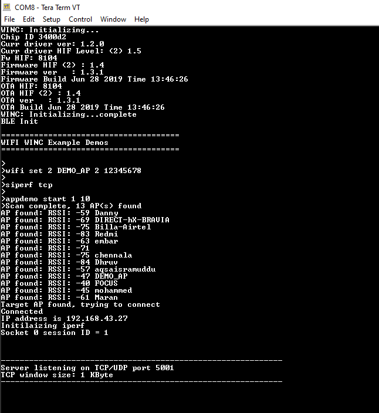

This application demonstrates how a user can run iperf application on WINC3400 device in Socket Mode.
- 1.
Configure the wifi parameters using "wifi set" command.

- 2.
Enter "siperf <tcp/udp>" on the terminal window to select and start the iperf application demo in the DUT.
Command on DUT Details siperf tcp Starts the TCP server at the DUT siperf udp Starts the UDP server at the DUT 
- 3.
Enter the application command "appdemo start 1 10 " to run the iperf demo. First the device will connect to the network. The IP address will be displayed on the terminal window. Then the TCP/UDP server will get started.
 - 4.
After the "TCP/UDP" server has started, the user wants to run the iperf commands on the PC to start the iperf application as TCP/UDP Client .
iperf command details.
Command on PC Details Example iperf -c <Server_IP_Address> -t <time_peroid> -i <time_interval> -r Setup the TCP Client in the PC iperf -c 192.168.43.27 -i 1 -t 10 -r iperf -u -c <Server_IP_Address> -t <time_peroid> -i <time_interval> -u -b <bandwidth> -r Setup the UDP Client in the PC iperf -u -c 192.168.43.27 -b 20M -i 1 -t 10 -r - 5.
After receiving the "Server Report" on the terminal, enter the iperf commands on the PC to set the iperf application as TCP/UDP server.
Command on PC Details Example iperf -s -i <time_interval> Setup the TCP Server in the PC iperf -s -i 1 iperf -s -u -i <time_interval> Setup the UDP Server in the PC iperf -s -u -i 1